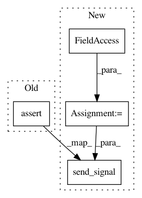

e4b2230408c2c4601bd033b636a41a7a054d01be,Orange/widgets/data/tests/test_owneighbors.py,TestOWNeighbors,test_input_reference_disconnect,#TestOWNeighbors#,35
Before Change
Check reference after disconnecting reference on the input
self.send_signal("Data", self.iris)
self.send_signal("Reference", self.iris)
self.assertEqual(self.widget.reference, self.iris)
self.send_signal("Reference", None)
self.assertEqual(self.widget.reference, None)
self.widget.apply_button.button.click()
self.assertIsNone(self.get_output("Neighbors"))
After Change
def test_input_reference_disconnect(self):
Check reference after disconnecting reference on the input
widget = self.widget
self.send_signal(widget.Inputs.data, self.iris)
self.send_signal(widget.Inputs.reference, self.iris)
self.assertEqual(widget.reference, self.iris)
self.send_signal(widget.Inputs.reference, None)
self.assertEqual(widget.reference, None)
In pattern: SUPERPATTERN
Frequency: 4
Non-data size: 4
Instances
Project Name: biolab/orange3
Commit Name: e4b2230408c2c4601bd033b636a41a7a054d01be
Time: 2019-01-11
Author: janez.demsar@fri.uni-lj.si
File Name: Orange/widgets/data/tests/test_owneighbors.py
Class Name: TestOWNeighbors
Method Name: test_input_reference_disconnect
Project Name: biolab/orange3
Commit Name: e4b2230408c2c4601bd033b636a41a7a054d01be
Time: 2019-01-11
Author: janez.demsar@fri.uni-lj.si
File Name: Orange/widgets/data/tests/test_owneighbors.py
Class Name: TestOWNeighbors
Method Name: test_input_data
Project Name: biolab/orange3
Commit Name: e4b2230408c2c4601bd033b636a41a7a054d01be
Time: 2019-01-11
Author: janez.demsar@fri.uni-lj.si
File Name: Orange/widgets/data/tests/test_owneighbors.py
Class Name: TestOWNeighbors
Method Name: test_input_data_disconnect
Project Name: biolab/orange3
Commit Name: e4b2230408c2c4601bd033b636a41a7a054d01be
Time: 2019-01-11
Author: janez.demsar@fri.uni-lj.si
File Name: Orange/widgets/data/tests/test_owneighbors.py
Class Name: TestOWNeighbors
Method Name: test_input_reference